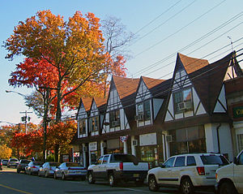

{kind=link}
My Hometown
Welcome, to Short Hills, New Jersey. This little slice of suburbia is located just 23 miles away from New York City. The town boasts a population of more than 13 thousand, as of the 2010 Census. Short Hills is home to a train station, a post office, several schools, and a shopping mall.

The Mall at Short Hills is one of the major attractions of Short Hills. Kids hang out there after school, shoppers buy designer goods, and senior citizens use the mall as a track for walking in the morning. Not only is there a wide range of stores, from clothing and jewelry stores to makeup boutiques and an Apple store.
Short Hills is known to have a good public school system. The town has 5 different elementary schools, one middle school, and one high school.
Schools:
| Name | Type | Grades |
|---|---|---|
| Millburn High School | Senior high | 9-12 |
| Millburn Middle School | Junior high | 6-8 |
| Glenwood | Elementary | K-5 |
| Hartshorn | Elementary | K-5 |
| South Mountain | Elementary | K-5 |
| Wyoming | Elementary | K-5 |
| Deerfield | Elementary | K-5 |
Here's a video:
One thing Short Hills does not have is a Singaporean restaurant. For more on Singaporean food, check out my page on Singaporean Food.